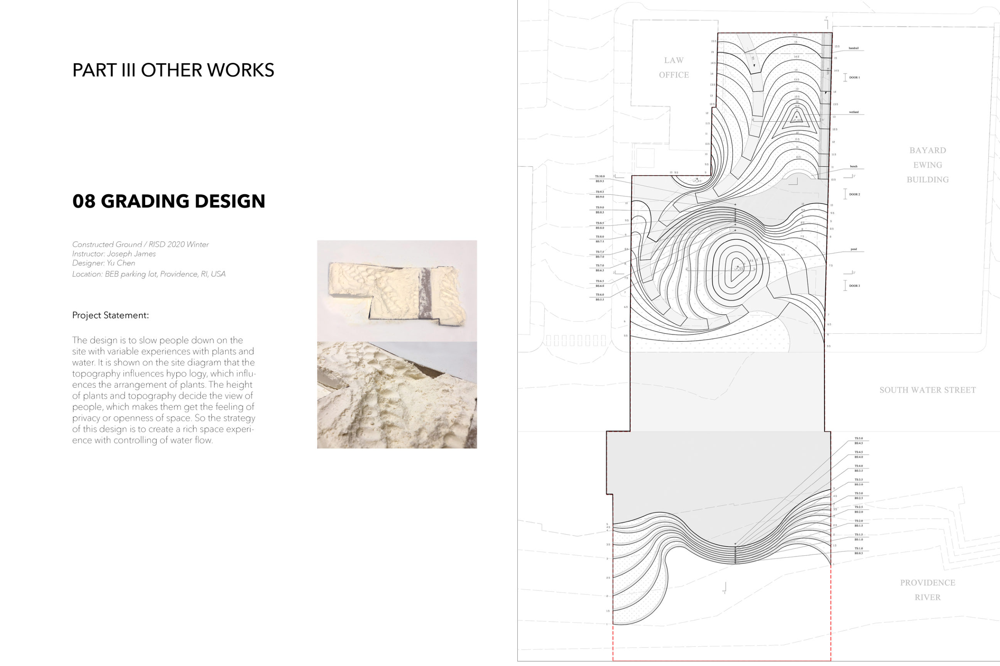
08Grading Design
Topography alone, tuned to slow people down — grading and water flow are the only tools, shaping how open or enclosed each pocket of the site feels.
Portfolio · RISD Master of Landscape Architecture
Landscape Designer — Systemic Thinker
"Landscape is one of the living networks that connects humans with social life, ecology, and culture — dynamic and self‑generated, together with the growth of the city around it."
Rebuilding a mine, soil layer by soil layer.
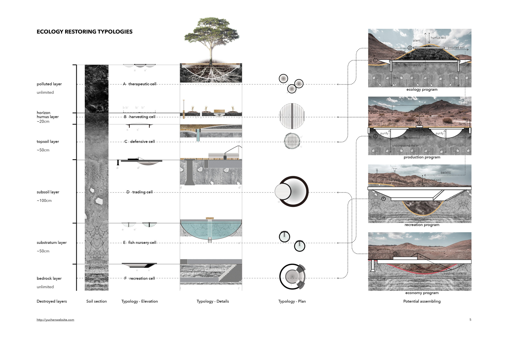
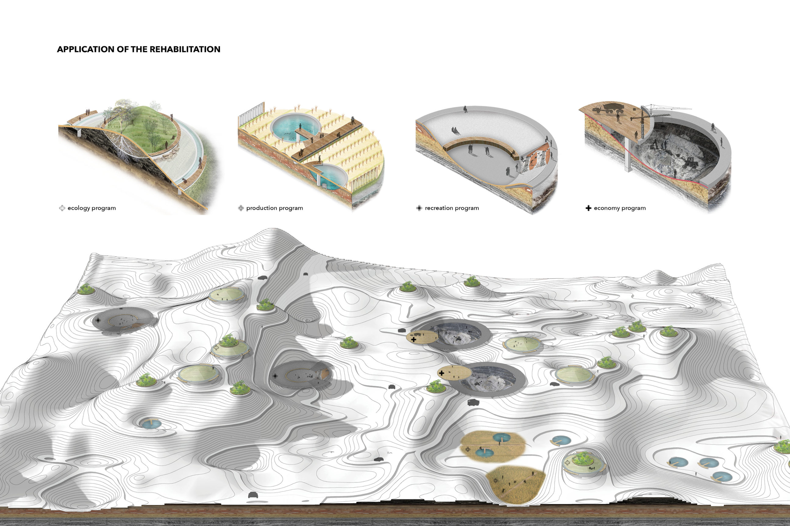
Mining land is usually treated as a destroyer of the environment, abandoned and forgotten once extraction ends. This project reads the site's soil horizons — humus, topsoil, subsoil, substratum, bedrock — to understand exactly which layers each mining method destroyed.
Rebuilding proceeds layer by layer, matching therapeutic, harvesting, defensive, trading, fish-nursery, and recreation cells to the depth of damage beneath them, so ecological repair and the local mining economy recover together instead of trading one off against the other.
Stitching Downcity back to Providence, across a highway.
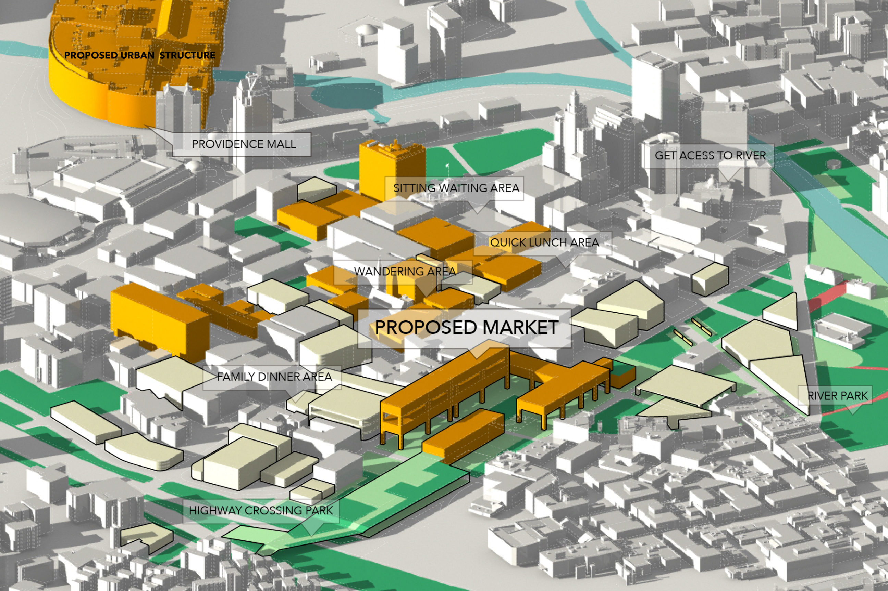
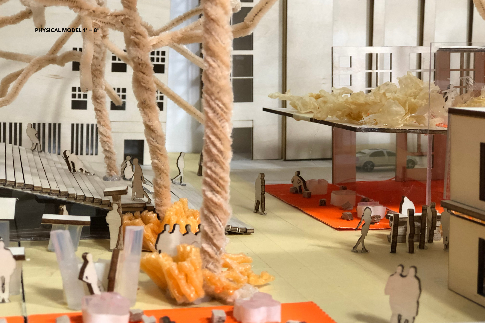
A highway boundary splits Downcity from the rest of Providence. This proposal works at two scales: a regional plan for the corridor, and a detailed design for a new Providence Market that connects directly into the mall.
Green roofs and a second-floor walking system carry pedestrians across the highway safely, turning what was a hard edge into a wandering, sitting, quick-lunch kind of place — with the river finally back in view.
A political line the water never recognized.
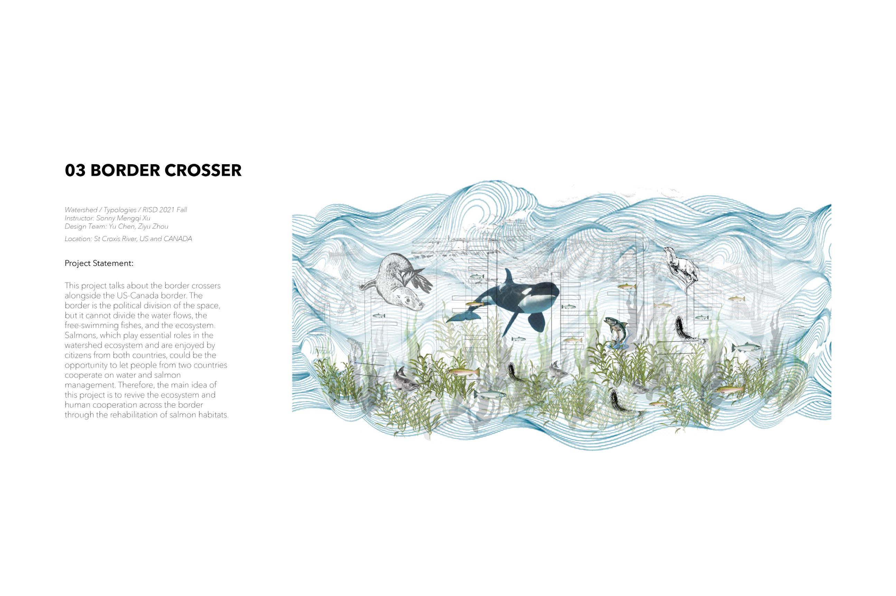
The US–Canada border runs straight through the St. Croix watershed — a political division that the water flow, the fish, and the wider ecosystem never agreed to. Salmon in particular are shared and valued by both countries.
That shared stake becomes the opening for cooperative habitat rehabilitation: removing the dams that block migration, and rebuilding the watershed as one continuous system rather than two national halves.
A courtyard designed to be read by touch.
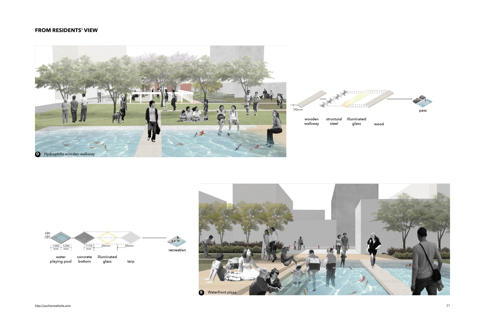
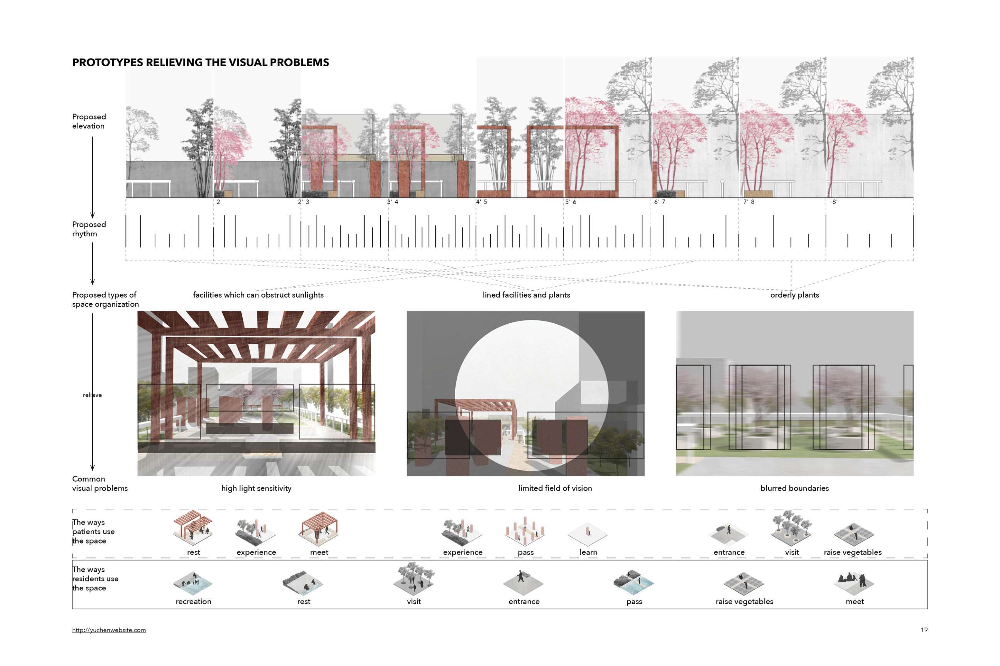
Designed specifically for patients with amblyopia at a Shanghai eye hospital. Sunshade shelves, ornamental tree arrays, and a hydrophilic wooden walkway soften and organize a site for people with high light sensitivity and limited or blurred vision.
A tactile square lets visitors navigate by hand — textured columns, illuminated glass, braille markers — while a shared vegetable garden gives patients and residents a reason to linger and work side by side.
A concrete dam, retrofit into a living edge.
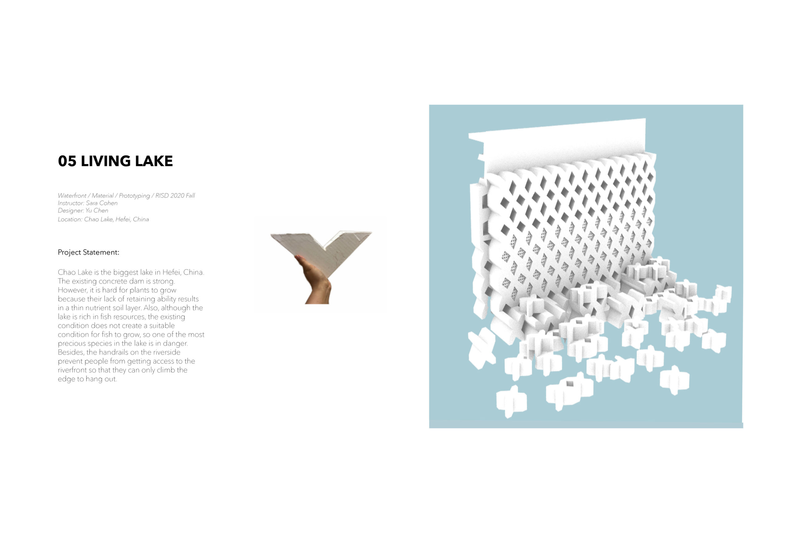
Chao Lake's existing concrete dam is structurally strong but ecologically flat — too smooth a surface for plants to hold a nutrient layer, or for one of the lake's most precious fish species to find a place to spawn. Handrails keep people from the water's edge entirely.
A single modular unit, cast in a diamond lattice, does three jobs at once: it holds soil for planting, breaks apart into fish-scaled habitat pockets, and steps down to the water so people can finally climb to the edge and hang out.
Experimenting with a way of landscape design to trigger empathy between pedestrians in the urban transport system.
This thesis names the accessibility deficiencies built into everyday urban systems, then asks what landscape design owes the pedestrians who move through them unevenly — the ones for whom a curb, a crossing, or a flight of stairs is never neutral.
It applies systemic thinking to the pedestrian system specifically: treating the city not as a solved problem to be designed once, but as a dynamic, self-generating system — capable of learning, the way an ecosystem does, from constant feedback between people, infrastructure, and consequence.
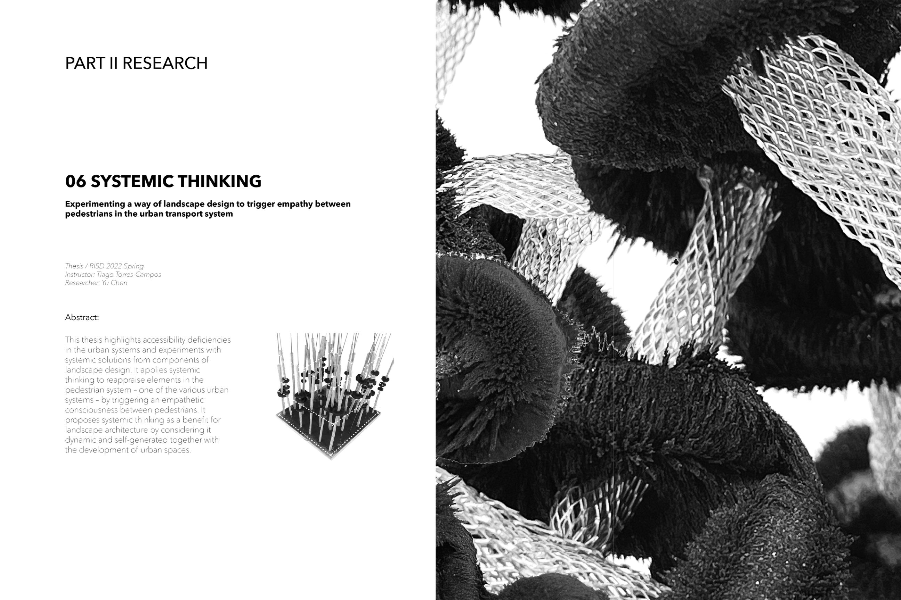
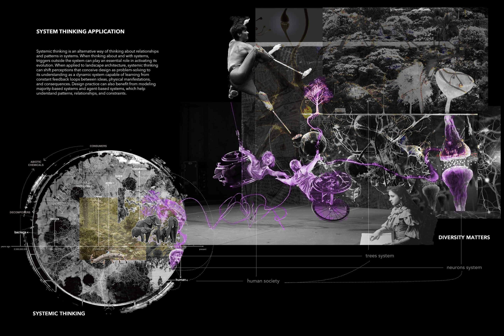
Planting as the strategy to turn brownfields into bouquets.
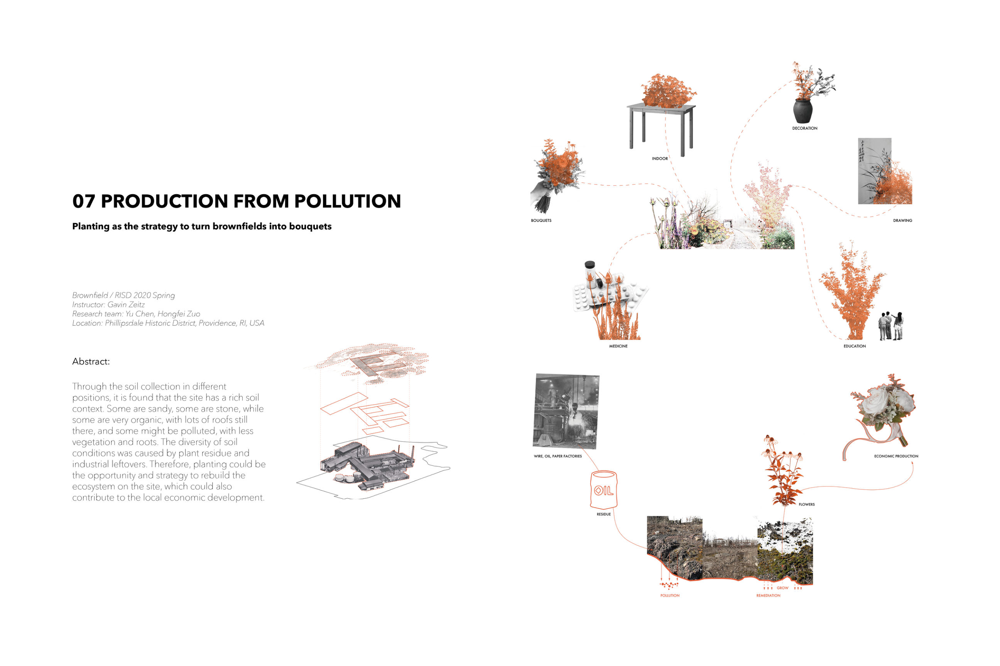
Soil sampled across positions on a former industrial site turned out richer and stranger than expected: sandy in places, stony in others, some of it still organic with old roofing debris mixed through, some of it genuinely polluted.
Rather than scrape that history away, this research proposes planting directly into it — turning contaminated ground into cut flowers grown for decoration, medicine, education, and local economic production, remediation and income from the same beds.

Topography alone, tuned to slow people down — grading and water flow are the only tools, shaping how open or enclosed each pocket of the site feels.
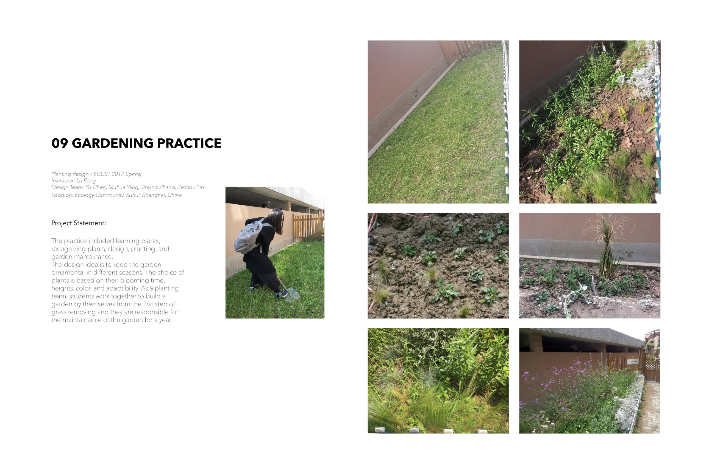
A year of hands-on maintenance, from clearing grass to choosing bloom time, height, and color — and staying responsible for the bed long after planting day.
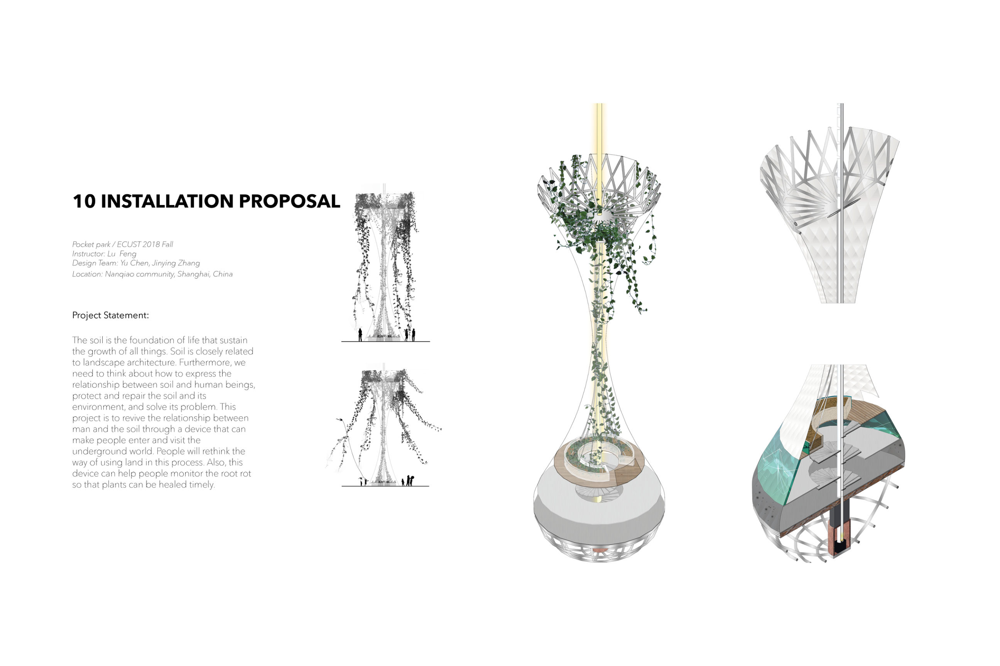
A structure that lets visitors descend into the soil itself, to monitor root health and rediscover a relationship with the ground usually hidden underfoot.
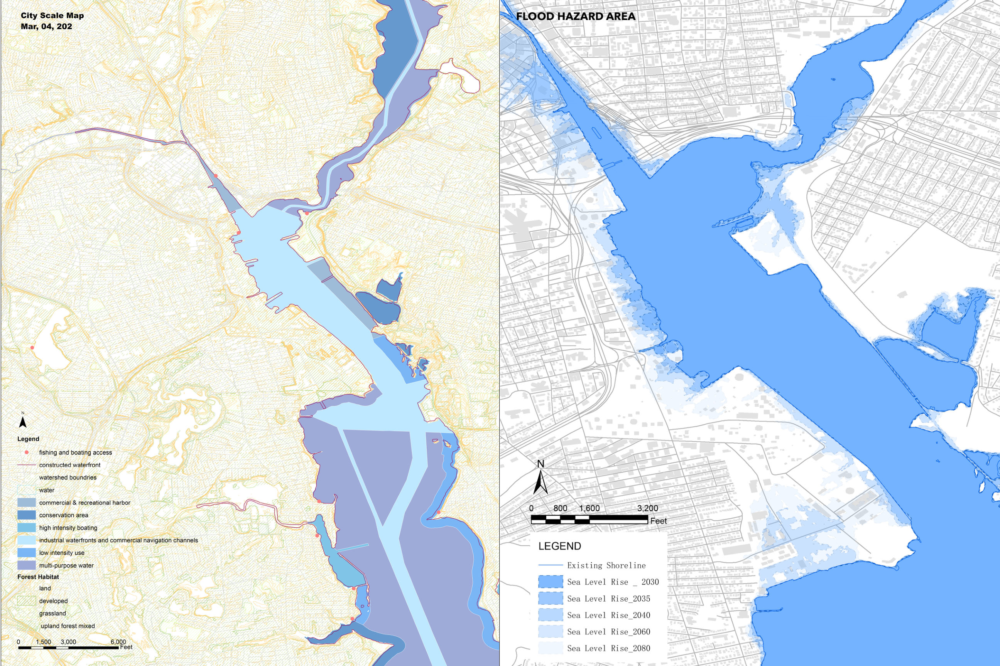
Region-, city-, and site-scale maps tracing how tides and sea-level rise reshape the edges of Providence, from 2030 through 2080.